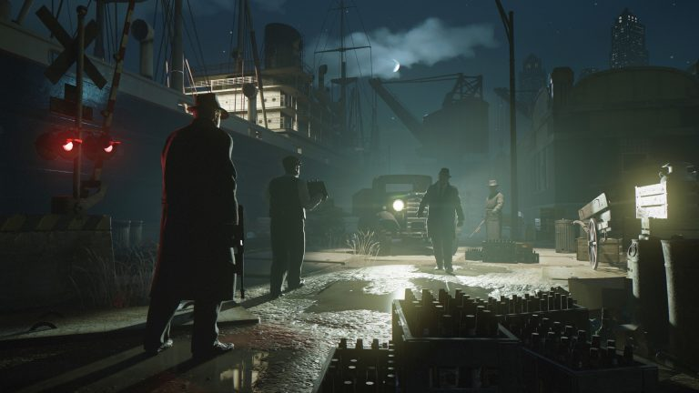

|
Son dönemlerin büyüyerek artan furyası gta 5 indirmek adına herkes ilgi göstermeye devam ediyor peki oyun hakkında bilgilere gelelim ; Oyunda Michael, Franklin ve Trevor isminde üç farklı karakter mevcuttur. Oyundaki üç karakterden her birinin farklı alanlarda farklı yetenekleri ve güçleri vardır. GTA IV’da seriye giren mobil telefon da bu seride biraz değiştirilmiş bir biçimde yer alacaktır. Mobil telefon daha çok internete bağlanmak için kullanılacak. GTA V’de önceki serilere göre daha çok araç bulunacak. Her bir karakterin istatistik özellikleri bulunacaktır. Dayanma gücü, dayanıklılık, hız, araba sürüşü, nişancılık ve “özel yetenekler” gibi istatistikler; sürüş, koşu, atış vb. gibi aktiviteleri yaptıkça artış gösterecektir.
Tür: Açık Dünya Oyunları, Aksiyon, Oyun, Strateji, Yıldız Oyunlar
Platform: PC
Boyut: 59.0 GB
Crack: RELOADED
Tarih: 15 Nisan 2015
Kaynak: Zamunda
Dil: İngilizce
|  |  |
Mafia suç efsanesinin birinci bölümü – 1930’lar, Lost Heaven, IL Sıfırdan başlayıp organize suçun Yasak çağında Mafya’da rütbenizi yükseltin. Tommy Angelo, mafyayla yaşadığı bir anlaşmazlık sonrasında yeraltı dünyasına dahil olur. Salieri’ye katılmaktan önce rahatsızlık duysa da, Tommy kısa zamanda ödüllerin çok büyük olduğunu görür. Bir Mafya Filmi Oynatın: Bir Yasak çağı gangsterinin hayatını yaşayın ve Mafya camiası rütbelerinde yükselin. Lost Heaven, IL: 1930’ların şehir manzarası göze, kulağa hitap eden ve etkileşimde bulunabileceğiniz savaşlar arası mimari, otomobil ve kültür öğeleriyle dolu bir şekilde yeniden oluşturuldu. Yenilenen Klasik: Genişletilmiş hikaye, oynanış ve orijinal oyun müziği ile sadık kalınarak yenilendi. Bu, hatırladığınız ve çok daha fazlasını içeren Mafia.
Tür: Aksiyon, Macera, Oyun, Türkçe Oyunlar, Yıldız Oyunlar
Platform: PC
Boyut: 36.7 GB
Crack: CPY
Tarih: 25 Eylül 2020
Dil: İngilizce (Türkçe Yama Mevcut)
Yoğun ormanlardan karla kaplı dağlara, egzotik adalardan yağmurlu ara sokaklara kadar uzanan, baş döndürücü güzellikteki ortamların her santimini muhteşem detaylarla keşfedin. Süper keskin 4K çözünürlük* ve Ultra Geniş Monitör desteği ile kendinizi bu sinematik hikâye anlatımına kaptırın. Ayarlanabilir Doku ve Model Kalitesi, Eşyönsüz Süzme, Gölgeler, Yansımalar ve Ortam Kapatma gibi gelişmiş birçok grafik ayarlama özelliğinin keyfini çıkarın.
Tür: Aksiyon, Macera, Oyun, Platform, Türkçe Oyunlar, Yıldız Oyunlar
Platform: PC
Boyut: 124 GB
Crack: v1.3.20900-P2P
Tarih: 19 Ekim 2022
Dil: TÜRKÇE DUBLAJ
 |
Yol boyunca enfes manzaralara sahip mitolojik toprakları keşfedecek ve Kuzey tanrılarından canavarlara, pek çok korkunç düşmanla karşı karşıya gelecekler. Ragnarök tehdidi adım adım yaklaşırken Kratos ve Atreus, kendi huzurları ve diyarların huzuru arasında bir seçim yapmak zorunda kalacak.Atreus, “”Loki”” kehanetini ve Ragnarök’te kendisine biçilmiş rolü anlamak adına irfan peşinde koşuyor. Kratos ise geçmişin yükünü sırtından atma ve oğluna babalık yapabilme derdinde.
Tür: Oyun, Açık Dünya Oyunları, Aksiyon, Macera, Türkçe Oyunlar, Yıldız
Oyunlar
Platform: PC
Boyut: 175 GB
Crack: v1.5
Tarih: 19 Eylül 2024
Dil: Türkçe
Ölen eşinden bir mektup alan James,onu bir kez daha görme umuduyla onunla pek çok anıyı paylaştığı yere gidiyor: Silent Hill. Orada, gölün yanında eşine ürkütücü derecede benzeyen bir kadın buluyor… “Benim adım… Maria,” kadın gülümsüyor. Yüzü, sesi… Tıpkı onun gibi.
Tür: Oyun, Aksiyon, Korku, Macera, Yıldız Oyunlar
Platform: PC
Boyut: 34.74 GB
Crack: v1.1.242.185
Tarih: 8 Ekim 2024
Dil: İngilizce
| 1 | 2 | 3 | 4 |
2024 yılı Ekim ayında, oyun satışları %3 oranında bir artış gösterdi. Bu artış özellikle PC ve konsol oyunlarında belirgin olurken, mobil oyunlar önceki aylara kıyasla düşüş gösterdi. Bu artışın ardındaki nedenler arasında popüler oyunların yeni sürümlerinin çıkışı, tatil sezonuna hazırlık ve büyük çaplı oyun etkinliklerinin etkisi önemli olmuştur. Konsol ve PC oyunlarının yüksek satış performansı, güçlü içerik güncellemeleri ve geniş çaplı pazarlama kampanyaları gibi faktörlerde satışı artıran etkenler arasında sayılabilir...
Haberin devamı için tıklayın.Rockstar Store, Epic Games ve Steam üzerinden oluşturulabilecek ön siparişlerin ne zaman başlayacağı önümüzdeki günlerde belli olacak. Red Dead Redemption ve ek paketi Undead Nightmare için PC sistem gereksinimlerini aşağıdaki tabloda inceleyebilirsiniz...
Haberin devamı için tıklayın.GeForce NOW powered by GAME+, NVIDIA’nın bulut tabanlı oyun stream hizmetidir ve doğrudan bulut üzerinden cihazına gerçek zamanlı oyun deneyimi sunar. Desteklenen oyunlar için bulut kayıtlarıyla, nerede olursan ol, oyununu kaldığın yerden, desteklenen herhangi bir cihazda devam ettirebilirsiniz ve GAME+ ayrıcalığı ile Türkiye'ye özel GeForce NOW sunucularından ulaşabilirsiniz. Yeni başlayanlar için oynaması ücretsiz bir planı da bulunuyor. Kütüphane de bulunan ücretsiz oyunları oynayabilir ve Steam, Epic Games Store’da kendi hesabınızdaki oyunlarınıza bulut erişimi sağlayabilirsiniz. Bazı stüdyolar oyunlarını Geforce Now kullanımına kapatmış olsalar da yinede oynayabileceğiniz binlerce oyun var. GeForce Now’ı ücretsiz olarak kullanmak mümkün ancak bazı kısıtlamalar mevcut. Sisteme yoğun talep olduğunda sıra beklemenin yanı sıra seansların bir saat ile sınırlandırılması oyun keyfini baltalıyor. Ücretli üyelik seçeneği olan Founders sayesinde hem bu sınırlar ortadan kalkıyor, hem de destekleyen oyunlar için NVIDIA’nın RTX teknolojisi aktif hale geliyor...
Haberin devamı için tıklayın.| Telegram | |||